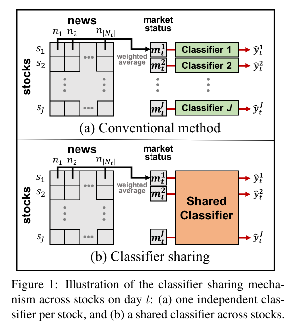
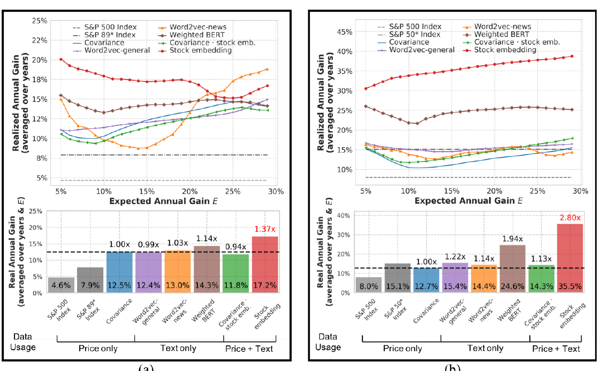

复杂金融市场的语义模型
金融市场并不只是一组价格时间序列。公司、新闻和极端事件通过语义关系形成相互作用网络，价格只是这一系统在交易时刻的低维投影。研究关注如何把文本中的事件结构转化为可计算的市场表示，并将其用于资产关系建模、组合优化与尾部风险控制。
关键词 金融自然语言处理 · 股票嵌入 · 事件语义 · Hilbert 空间 · 组合优化 · 尾部风险
从价格预测转向市场表示
金融文本研究常把新闻输入神经网络，直接预测次日涨跌。这个设定有两个限制。第一，在近似有效的市场中，短期方向预测本身噪声极高，模型容易学习特定数据集的偶然相关。第二，即使预测有所改善，文本与价格的关系通常分散在整个网络参数中，难以抽取并迁移到风险分析、资产定价或组合构造。
我们的出发点是改变学习对象：不把神经网络的输出视为唯一结果，而是显式学习股票的向量表示。股票代码由此不再只是文本中的离散符号，而成为一个由新闻语义和价格运动共同约束的、具有外部市场含义的表示。核心问题也从“明天是否上涨”变为“新闻如何改变股票之间的几何关系，以及这种关系能否支持新的金融任务”。
新闻驱动的股票嵌入
在 ACL 2020 论文 中，每只股票 对应向量 。新闻 被编码为 key-value 对 ；股票向量与新闻 key 的内积决定该新闻对股票的相关程度：
对同一时间窗口内的新闻加权后，得到股票 在时刻 的市场状态
这里的关键不是注意力本身，而是 成为新闻与股票之间可抽取的接口。它能选择与公司有关、但未必显式出现股票代码的新闻；不同股票的向量距离也会反映行业、事件暴露和共同价格反应。

金融数据按日采样时，每只股票的监督信号有限。论文让所有股票共享同一个价格运动分类器，而把股票特异性保存在 中，使分类器的有效训练样本扩大约 至 倍。结合新闻的双向量表示后，Reuters 与 Bloomberg 数据上的分类准确率达到 68.8%。这一分类任务使用当天信息，目的不是宣称可直接预测市场，而是检验表示是否捕获了新闻与已发生价格运动之间的关系。
将语义几何带入组合优化
经典 Markowitz 模型用历史收益协方差 描述资产共同波动：
但有限价格历史对突发事件和结构变化的覆盖很弱。股票嵌入提供了另一种关系矩阵：若 ，则其归一化 Gram 矩阵
描述两个资产在新闻与价格共同监督下的语义相关性。ACL 2020 将这一几何关系用于组合风险矩阵。严格按时间滚动的投资模拟中，Reuters 与 Bloomberg 数据上的股票嵌入组合，其平均实现年收益为仅使用历史协方差基线的 2.8 倍。这个结果的意义不在于给出固定交易策略，而在于证明文本—价格联合表示可以脱离原分类器，迁移到组合构造。

NESTED：事件分布上的金融语义空间
Knowledge-Based Systems 2022 论文 将上述表示推广为 NESTED（NEws-STock space with Event Distribution）。股票、新闻与潜在事件被放入同一个内积空间 ；市场对象之间的关系由事件分布诱导，而不是依赖数据类型各异的启发式拼接。对股票向量 ，语义关系可以写成
这一形式把文本、价格和事件统一为可进入二次组合目标的 Gram 几何。传统协方差主要描述常态区间中的共同波动，NESTED 则利用新闻对罕见事件的选择性记录，补充有限价格样本难以稳定估计的尾部关系。语义模型因此不是额外的情绪特征，而是风险度量的结构部分。
尾部风险是语义问题
金融收益具有厚尾。若损失 的尾部分布近似满足
则极端损失不能仅由方差充分描述。论文在三个市场的 组新闻—价格数据上比较组合的负收益尾部。引入 NESTED 后，三个市场的 Pareto 指数均提高，表明生成组合的极端负收益尾部变轻；在兼顾常态波动与尾部风险的设置中，最高取得 45.5% 的收益提升和 59.4% 的 Information ratio 提升。
这里的主要发现是：极端事件虽然在价格序列中稀疏，却在新闻文本中被集中记录。文本的这种采样偏差通常被视为噪声，但对尾部风险恰好提供了结构信息。语义空间把“哪些公司受到同类事件影响”转化为资产间可计算的内积，使低频事件能够进入长期风险配置。
研究边界与应用
这一方向面向事件驱动的风险监测、跨资产关系发现、组合构造和金融知识表示。进一步的问题包括：如何让股票表示随市场状态在线演化；如何区分共同语义暴露与真实因果影响；如何把央行政策、供应链事件和公司公告组织为多尺度事件场；以及如何在市场相变前识别语义关系矩阵的谱变化。
文本不能消除金融市场的不确定性。新闻来源存在选择偏差，历史回测也不能保证未来收益；嵌入的几何相似性更不等价于因果关系。因此，这类模型更适合作为价格统计之外的结构化风险信号，用于提高资产关系和极端事件暴露的可观测性，而不是作为确定性的价格预测器。
相关论文
Xin Du and Kumiko Tanaka-Ishii. Stock Embeddings Acquired from News Articles and Price History, and an Application to Portfolio Optimization — 论文介绍. ACL 2020. Paper
Xin Du and Kumiko Tanaka-Ishii. Stock Portfolio Selection Balancing Variance and Tail Risk via Stock Vector Representation Acquired from Price Data and Texts — 论文介绍. Knowledge-Based Systems, 2022. Paper